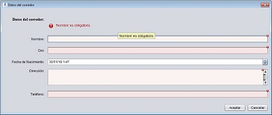

DATOS DEL CORREDOR

Características:
Desde la pantalla corredor disponemos de los campos necesarios para poder dar de alta un nuevo corredor en la aplicación.
Elementos necesarios:
Campos:
- Nombre:
Espacio donde se debe escribir el nombre del corredor con sus dos apellidos.
- Dni:
Espacio donde se debe indicar el DNI del corredor.*
- Fecha de nacimiento:
Debe seleccionar su fecha de nacimiento.
- Dirección:
Espacio donde se debe escribir la dirección del corredor.
- Teléfono:
Espacio donde se debe indicar el teléfono del corredor.
Adicional:
Dispone del botón "Aceptar" que añadira el corredor a la aplicación, y el botón "Cancelar" devolverá al usuario a la pantalla principal.
* Una vez añadido el corredor a la aplicación no será posible modificarlo, deberá eliminar el corredor y crearlo de nuevo.